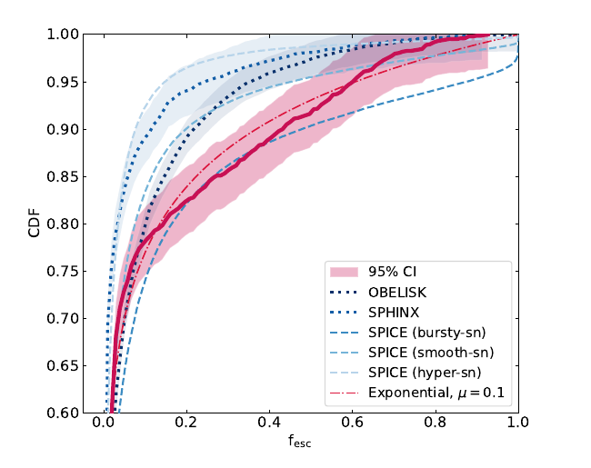

The average escape fraction is modest
The inferred population mean lies around 10–15%, with no strong trend across ultraviolet luminosity. A single luminosity-dependent prescription would miss much of the observed diversity.
Collaborator study · JWST + SPICE
Spectral modelling of 1,428 JWST/NIRSpec galaxies infers a population dominated by low ionising escape fractions, with a small high-escape tail. This distribution is closest to SPICE Bursty.

At redshift five and above, intergalactic hydrogen prevents direct detection of escaping Lyman-continuum radiation. The escape fraction must be inferred indirectly.
The study fits 1,428 JWST/NIRSpec galaxy spectra with a picket-fence geometry: some stellar sightlines are covered by neutral gas while others remain open. This links the ultraviolet continuum, nebular emission, dust, and covering fraction within a consistent spectral model.
The large sample makes it possible to study the full escape-fraction distribution and its relationship to luminosity, age, star formation, ultraviolet slope, ionisation state, and star-formation surface density.
The inferred population mean lies around 10–15%, with no strong trend across ultraviolet luminosity. A single luminosity-dependent prescription would miss much of the observed diversity.
These candidates tend to be younger, more actively star-forming, and bluer in ultraviolet slope than the full sample, consistent with recently opened low-column-density channels.
The analysis does not find significant trends with O32 or star-formation-rate surface density in this sample, cautioning against using either quantity as a deterministic escape proxy.
A bursty duty cycle naturally yields many low-escape phases and a smaller population caught after feedback has opened channels, rather than holding all galaxies near one typical value.
SPICE links high escape to disrupted, porous gas rather than to a permanent type of galaxy. The JWST distribution provides an observational way to test that picture statistically.
The closest curve does not mean every individual object can be mapped to a simulated phase. It means the population-level mix of low- and high-escape systems is more consistent with the bursty model than with the smoother SPICE variants.
Interpretation boundary: the escape fractions are model-dependent inferences from rest-frame UV and optical spectra, not direct Lyman-continuum detections. Geometry, stellar populations, and dust assumptions contribute systematic uncertainty.